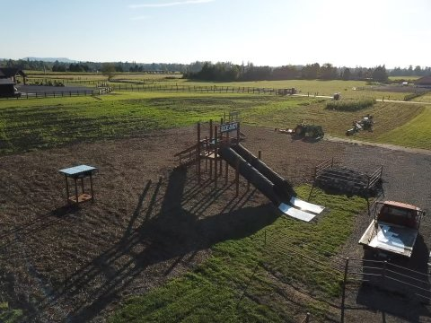

The farm
Run by the Williams family
A family farm on SE 464th that opens its fields to the rest of Enumclaw every fall.
The pumpkins are grown here, the maze is cut into their own corn, and the launcher, the hay pyramid and the bounce house go up for the season and come down again when the last pumpkin leaves.
Visitors have shared stories of family outings and birthday parties here, with the fields and Mount Rainier behind them.